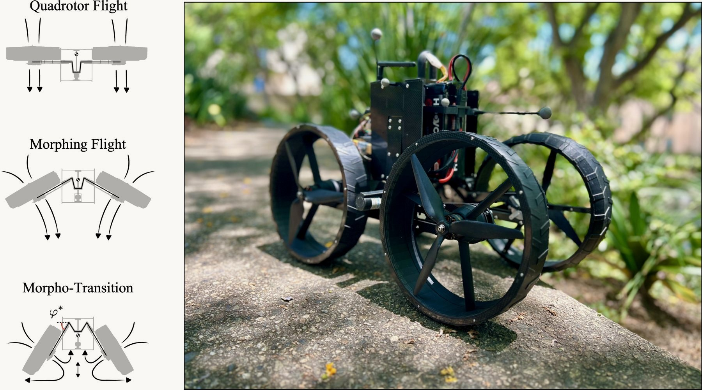
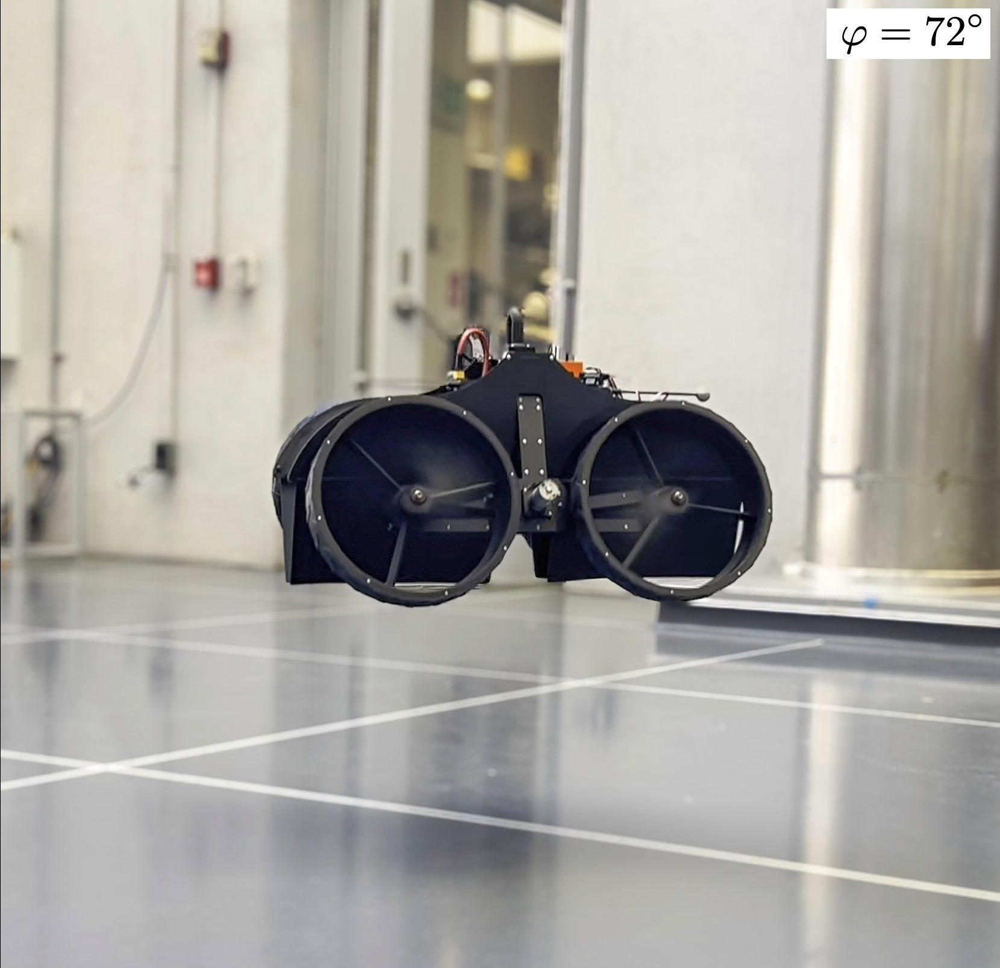
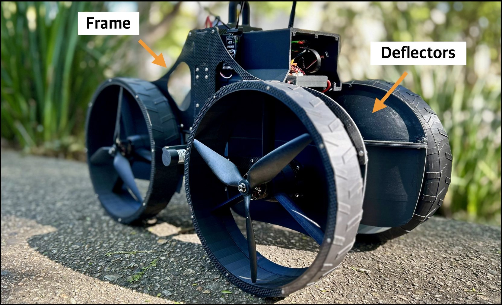
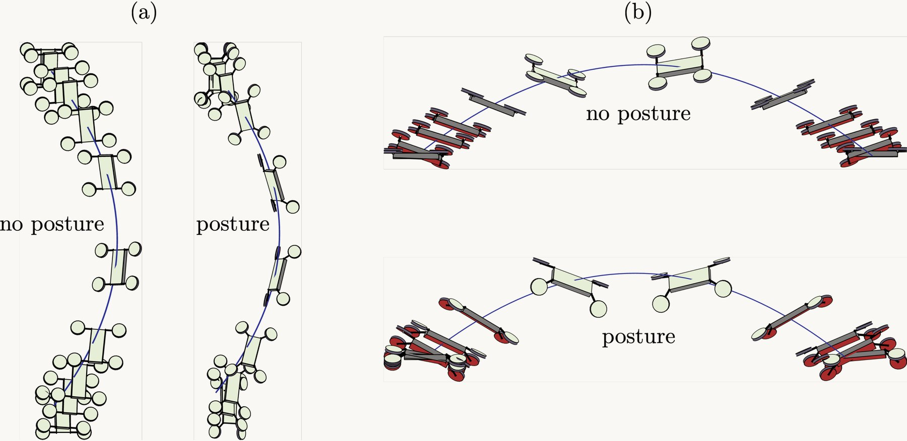
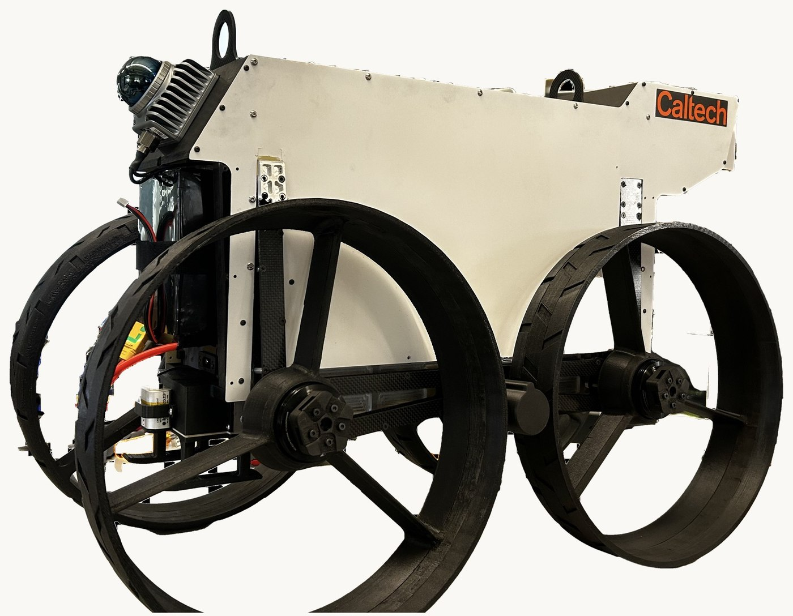

Research / Featured research
Ground-Aerial Morphing Robotics
Robots that fly and drive with the same body. We design morphobots that reuse one set of actuators across locomotion modes and transform in mid-air to land on their wheels, and we study the aerodynamics that make such transitions possible: ground effect close to touchdown, and rotor wake that can be redirected rather than lost.
In the media: Caltech video · Sky News Arabia · TII delivery demo
ATMO: an aerially transforming morphobot for dynamic ground-aerial transition
ATMO lands by changing shape in mid-air. Its four thrusters tilt during descent to become wheels, so the robot touches down already configured to drive. Close to the ground the air works in its favour: ground effect lets ATMO land at body postures beyond its thrusters' saturation limit.


Wake vectoring for efficient morphing flight
Tilting a rotor to change shape costs lift. Deflectors built into ATMO's frame intercept the rotor wake and turn it back toward the ground, recovering up to 40% of vertical thrust in configurations that would otherwise produce almost none, with no added motors or electronics.


Minimum time trajectory generation for bounding flight: combining posture control and thrust vectoring
Birds bound: they tuck their wings mid-flight, changing both their aerodynamics and their inertia at once. We pose that idea as an optimal control problem for an aerial robot with articulated thrusters and solve it by trapezoidal collocation. Coupling posture control with thrust vectoring opens paths through narrow, changing geometries and shortens the time a manoeuvre takes.

ATMO in the field: outdoor package delivery with TII
We built a second ATMO for our collaborators at the Technology Innovation Institute in Abu Dhabi and ran it outdoors on a package delivery mission: fly to the drop point, transform close to the ground, land on the wheels and drive the last stretch. The robot was also presented at IROS 2024 in Abu Dhabi, where it was covered by Sky News Arabia.

More research Learning-Based Control · Fluid-Body Interaction and Flow Control · Vision-Based Navigation and Manipulation